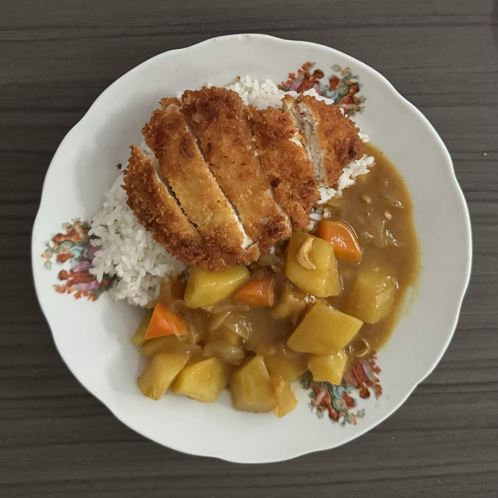
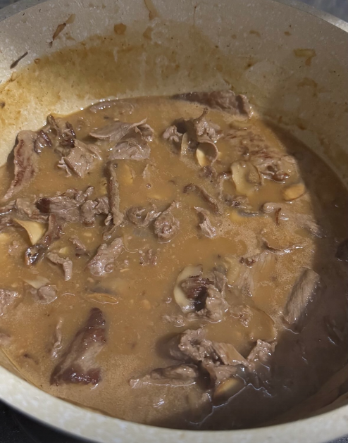
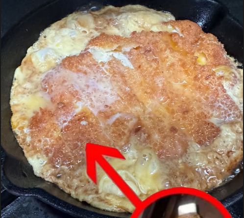

Chicken Katsu Curry

Halaman ini menampilkan beberapa masakan yang pernah saya buat di rumah.
Pilihan masakan
Berikut beberapa masakan yang pernah saya dokumentasikan saat dibuat.



| Masakan | Keterangan | Dokumentasi |
|---|---|---|
| Chicken katsu curry | Ayam katsu disajikan dengan nasi dan saus curry. | Tersedia |
| Masakan berkuah | Masakan berkuah yang dimasak dalam panci. | Tersedia |
| Ayam goreng dengan telur | Ayam goreng yang dimasak bersama telur di wajan. | Tersedia |
Catatan berikutnya
Formulir ini tersedia untuk menambahkan masakan lain ke daftar.